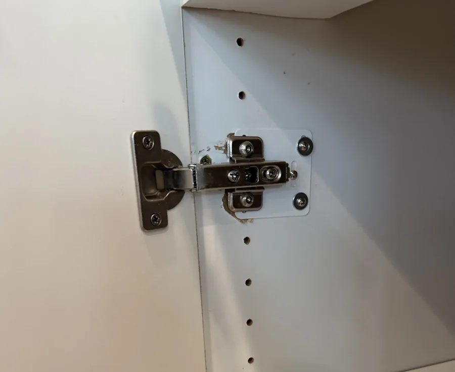
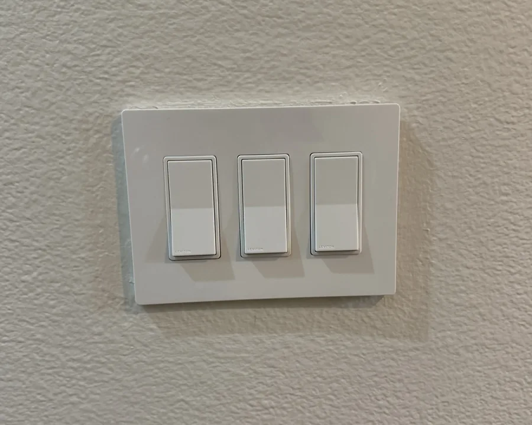

Everyday kitchen
& bathroom repairs
Running toilets, faucet swaps, disposal problems and shower-head replacement at existing fixtures.
A running toilet, a loose cabinet door, and a faucet you’ve been meaning to replace. Send Dustin the whole list so you can plan the work together.
Work directly with Dustin Swad. Prefer to call? (949) 371-6423
Whether you call it a punch list, a honey-do list or a growing home to-do list, describe the things that need attention. These are examples of work to include for review.
Running toilets, faucet swaps, disposal problems and shower-head replacement at existing fixtures.
Doors that rub or won’t latch properly, loose cabinet hinges, drawer adjustments, handles and other household hardware.
Describe what feels loose, sticks or no longer lines up. You do not need to know which part has failed.
Existing light fixtures, switches and outlets, bathroom fans, smoke/CO alarms, hanging and furniture assembly.
The list is reviewed item by item. Existing connections and access matter; soldered pipe work, new circuits, structural changes and major remodels are outside this service. Explore all current services →
A phone note or a simple message is enough. Include the whole list, even if a few items are more urgent than the rest.
Photos and product links can help, but they are optional for the first inquiry. For a replacement, check fit before ordering parts.
Tell Dustin what needs fixing, your city or ZIP code, and which items matter most. Room-by-room notes work well.
Dustin confirms suitable tasks, access, parts and the work to include. Get a written estimate before proceeding.
Plan related tasks together where practical. Completion in one visit depends on scope, diagnosis and parts; additional work is agreed first.
Examples from Ultra’s project gallery. These are separate projects, not a claim that they were completed together in one visit.



A client with several things to get done
“Dustin was extremely responsive to my messages and questions. He was able to finish installing a faucet, complete my painting, replace the bathroom fans and also swap out door knobs in good time. I appreciated his before/after pictures and his prompt responses to my questions. I would highly recommend him!”
“The toilet keeps refilling” or “this cabinet door won’t stay shut” is more useful than guessing at a part. Add any timing constraints and flag the items you want handled first.
Realtor and listing-prep repairs have a dedicated page for inspection lists and property transitions.
It is a list of small repairs or installations you want help with around your home. You might call it a honey-do list, a home to-do list or just the things you have been putting off. You do not need a formal document or technical descriptions.
Yes. Send the plumbing, hardware, fixture and other small repair items together. Dustin will confirm which tasks fit the service, what parts are needed and how to plan the work. Not every item needs a separate inquiry.
That depends on the work, access and parts. Share the whole list before scheduling so the visit can be planned. Some items may need diagnosis, ordered parts or a separate visit; Dustin will discuss that with you.
There is no fixed punch-list package price on this page. The estimate depends on the agreed tasks, their condition, access and required parts. Ask for a written estimate before work starts, and agree on any additional work before it is added.
Photos and product links can help, but they are optional for the first inquiry. Describe each item and include your city or ZIP code. If a replacement product is involved, check compatibility with Dustin before buying it.
Send the relevant items for review. Dustin can assess which repairs fit the service. Realtors and property owners preparing a listing, inspection response or turnover can also use the dedicated Realtor repair page. Realtor repair services →
Dustin confirms scope before work starts. Soldered pipe work, new electrical circuits, structural changes and major remodels are outside this service. A repair list is reviewed item by item; it is not a promise that every problem can be handled.
Primary service areas are Irvine, Newport Beach, Newport Coast, Corona del Mar and Laguna Beach. Also serving Lake Forest, Mission Viejo, Aliso Viejo, Laguna Niguel, Dana Point and surrounding areas.
Send your location with the repair list so Dustin can confirm the work and scheduling.
Send the tasks. Get a clear next step.